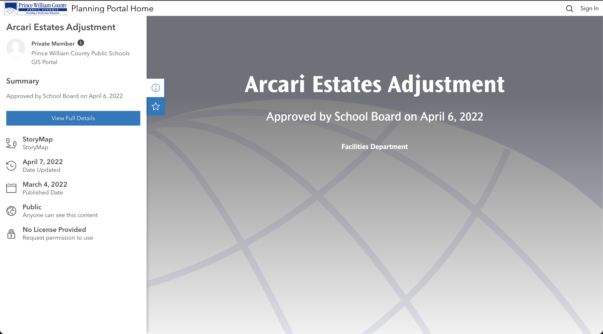

I am a young professional specializing in Geographic Information Sciences. I am seeking a position that allows me to expand my growing data analysis and project management skills.
Recent Work
ESRI Sites PWCS Planning Portal
PWCS Planning Portal Site
As a new member of the Planning Team I identified a need for a new platform to share the great interactive web applications, initiatives, and data that we worked so hard to produce on a daily basis. As such, I used existing resources to create an ESRI Site that now hosts publications, interactive applications, and the data that I create as a GIS Analyst.
From start to finish I was in charge of managing this extensive project. I communicated with stakeholders, held progress meetings, and created the many web apps that now populate the site. This project and others like it have provided me opportunity to expand my project management, cartography, and data communication skills.

Arcari Estates Storymap
Arcari Estates Storymap
This Storymap was created as a replacement for a static single page report. It displays the process and reasoning behind a boundary adjustment as well as a timeline for completion.
Geographic Progression Report Applicaiton
Geographic Progression Report Application
This application serves as an interactive resource that replaced a series of large tables.
Facilities Application
Facilities Application
This application serves as a resource for those new to the PWCS school system to lookup basic information about their school.
Woodbridge Area Storymap
Woodbridge Area Storymap
This Storymap serves as a resource for community members about an upcoming capital improvements project.
Attendance Areas Application
Attendance Areas Application
This application serves to inform parents and students about what school they are set to attend based off of location.
Additional Portfolio Items
In addition to these online portfolio items, I have also been responsible for numerous print publications that can be conveniently found on the Publications and Apps page of the PWCS Planning Website.
Publications and Apps Page
{kind=link}
{kind=link}
{kind=link}
{kind=link}
{kind=link}
{kind=link}